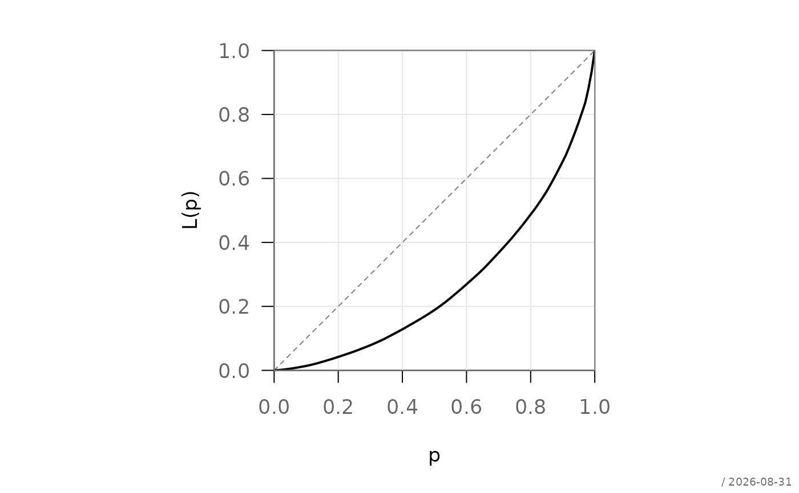
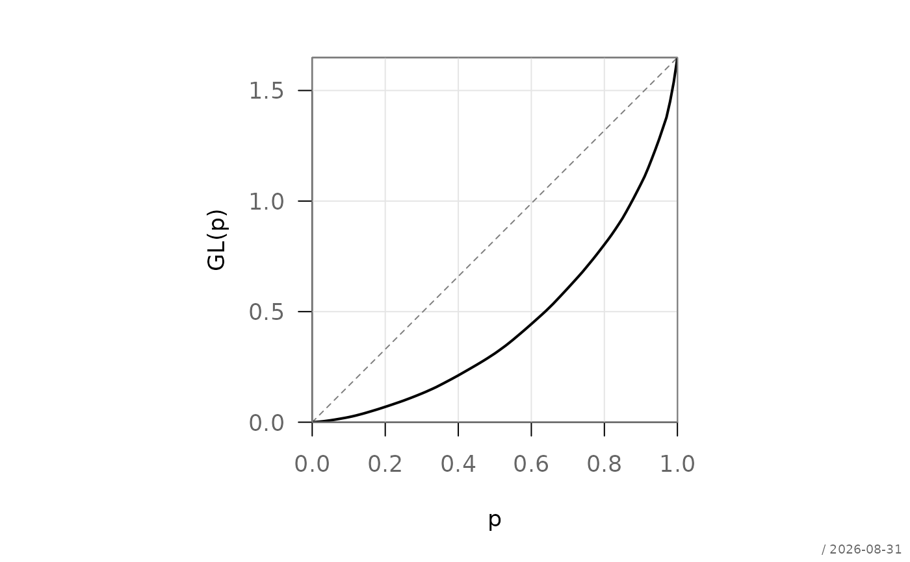
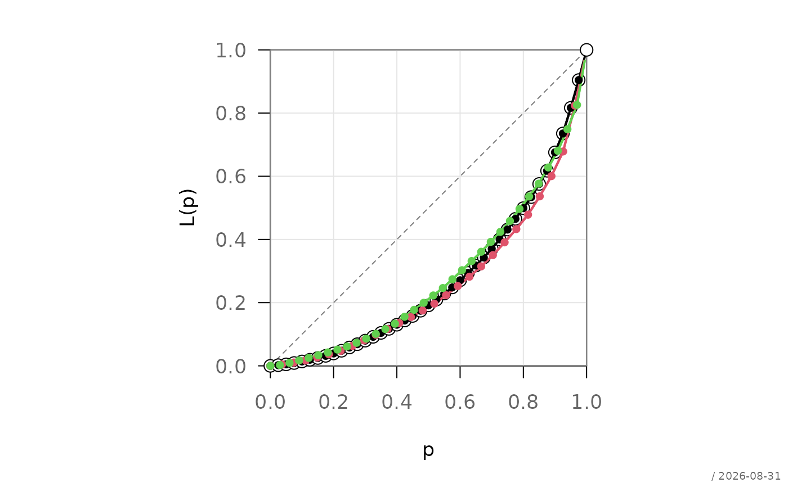

Computes the empirical Lorenz curve for a numeric vector, optionally with
weights and grouped via formula interface. Returns an object of class
"Lc" (or "LcList" for grouped data) that can be visualized
with plot(), lines(), and points() from the
pharos package.
Arguments
- formula
a formula of the form
y ~ groupspecifying the response and grouping variable- data
optional data frame in which to evaluate
formula- subset
optional expression indicating which rows of
datato use- na.action
function for handling missing values in the model frame. Default is
na.pass.- ...
further arguments passed to
lc.default()fromlc.formula(). Inpredict.Lc(), the argumentR(positive integer, default999) controls the number of bootstrap replications whenconf.levelis supplied; it is extracted via.extractBootArgs()and ignored otherwise.- x
numeric vector of non-negative values
- n
numeric vector of non-negative weights of the same length as
x. Defaults to equal weights (rep(1, length(x))).- na.rm
logical. If
TRUE, observations withNAinxornare removed before computation. Default isFALSE.- object
object of class
"Lc"as returned bylc()- newdata
optional numeric vector of values in \([0, 1]\) at which to evaluate the Lorenz curve via linear interpolation. If omitted, the original grid points are returned.
- conf.level
numeric scalar in \((0, 1)\). If supplied, bootstrap confidence intervals at level
conf.levelare added as columnslcianduci. Set toNA(default) to suppress intervals.- general
logical. If
TRUE, the generalized Lorenz curve is used. Default isFALSE.
Value
lc.default()an object of class
"Lc", a list with components:pnumeric vector of cumulative population shares starting at 0
Lnumeric vector of Lorenz curve values at
pL.generalgeneralized Lorenz curve values
Giniestimated Gini coefficient
xoriginal unsorted data vector
noriginal weight vector
lc.formula()a single
"Lc"object if the formula specifies one group, otherwise an object of class"LcList"(a named list of"Lc"objects, one per group level)predict.Lc()a data frame with columns
pandL(interpolated curve values atnewdata). Ifconf.levelis supplied, columnslcianduciare appended.
Details
The Lorenz curve is defined as
$$L(p) = \frac{\sum_{i=1}^{k} w_i x_i}{\sum_{i=1}^{n} w_i x_i}$$
where observations are sorted in increasing order and \(p\) denotes the cumulative proportion of weights up to rank \(k\).
The generalized Lorenz curve scales the standard curve by the weighted mean \(\mu\):
$$L_{\text{general}}(p) = L(p) \cdot \mu$$
For formula input of the form y ~ group, the data are split by
group and a separate Lorenz curve is computed for each level. A single
"Lc" object is returned when there is only one group; otherwise
an "LcList".
Bootstrap confidence intervals in predict.Lc() are based on
resampling with replacement from the (weighted) empirical distribution,
followed by pointwise quantiles across bootstrap replicates. The number
of replications is controlled by R passed via ... and
extracted by .extractBootArgs() (default R = 999).
References
Lorenz, M. O. (1905). Methods of measuring the concentration of wealth. Publications of the American Statistical Association, 9, 209–219.
See also
pharos::plot.Lc for visualization.
Other inequality:
atkinson(),
divCoef(),
gini(),
rosenbluth(),
theil()
Examples
set.seed(1)
x <- rlnorm(100)
# default method
lc_obj <- lc(x)
lc_obj$Gini
#> [1] 0.4697139
# with weights
w <- runif(100, 0.5, 2)
lc(x, n = w)
#> $p
#> [1] 0.00000000 0.01667602 0.02765357 0.03283079 0.04202449 0.04696748
#> [7] 0.05638264 0.06201162 0.07023687 0.07523165 0.08742561 0.09825205
#> [13] 0.10479393 0.11585831 0.12694584 0.14042665 0.14618397 0.15326746
#> [19] 0.16300758 0.17082749 0.18509908 0.20157914 0.21594853 0.22183435
#> [25] 0.22653431 0.23381894 0.24359562 0.26002810 0.26771346 0.28102722
#> [31] 0.29433819 0.30190065 0.31558283 0.32193626 0.33380180 0.34212844
#> [37] 0.34981967 0.36102089 0.37752414 0.38785057 0.39389959 0.40545989
#> [43] 0.41644830 0.42900449 0.43735520 0.44582112 0.45861366 0.46531069
#> [49] 0.47989878 0.49044929 0.49898059 0.51139349 0.51857745 0.52506358
#> [55] 0.53228217 0.53912207 0.54581827 0.55196081 0.56242497 0.57234343
#> [61] 0.57840268 0.58761490 0.59325654 0.60751188 0.62296495 0.62811297
#> [67] 0.63977586 0.64597015 0.65917738 0.66836852 0.67604343 0.68480655
#> [73] 0.68976904 0.69907536 0.71543905 0.72339506 0.73958177 0.74817614
#> [79] 0.75419541 0.76442584 0.77049110 0.77698278 0.79373384 0.81034467
#> [85] 0.81809906 0.83484522 0.84336772 0.85329756 0.86829034 0.88540362
#> [91] 0.90119921 0.90724790 0.91610539 0.92675580 0.94091655 0.95776753
#> [97] 0.96870362 0.97654230 0.98229671 0.98884205 1.00000000
#>
#> $L
#> [1] 0.000000000 0.001085041 0.001979843 0.002487300 0.003681286 0.004358049
#> [7] 0.005773725 0.006709560 0.008108789 0.008983490 0.011332336 0.013603296
#> [13] 0.015135141 0.017994074 0.020902755 0.024723097 0.026409961 0.028490482
#> [19] 0.031405407 0.033896111 0.038465488 0.043790799 0.048539760 0.050516850
#> [25] 0.052102875 0.054626241 0.058238004 0.064337495 0.067277383 0.072516484
#> [31] 0.077864069 0.080985591 0.086993353 0.089786468 0.095274793 0.099484038
#> [37] 0.103406154 0.109237165 0.117829313 0.123329085 0.126581686 0.133073939
#> [43] 0.139264704 0.146355201 0.151112877 0.155963733 0.163464595 0.167459882
#> [49] 0.176400045 0.183172488 0.188650012 0.197272173 0.202416222 0.207084568
#> [55] 0.212703291 0.218158472 0.223706233 0.228812843 0.237583586 0.246094302
#> [61] 0.251321895 0.259411254 0.264376006 0.277025077 0.291011623 0.295947191
#> [67] 0.307262845 0.313703546 0.327461226 0.337143589 0.345277849 0.354735260
#> [73] 0.360091171 0.370305241 0.388429237 0.397879230 0.417244867 0.427560567
#> [79] 0.435066080 0.448143516 0.455938312 0.464395391 0.487087777 0.510978938
#> [85] 0.522562450 0.548207521 0.562912062 0.580689246 0.608207396 0.640751750
#> [91] 0.671326191 0.683388130 0.703926385 0.730527913 0.767066720 0.812604243
#> [97] 0.844460949 0.867488643 0.892335058 0.926585892 1.000000000
#>
#> $L.general
#> [1] 0.000000000 0.001820792 0.003322346 0.004173902 0.006177514 0.007313179
#> [7] 0.009688806 0.011259217 0.013607243 0.015075066 0.019016631 0.022827497
#> [13] 0.025398064 0.030195599 0.035076615 0.041487477 0.044318179 0.047809471
#> [19] 0.052700966 0.056880580 0.064548386 0.073484714 0.081453878 0.084771605
#> [25] 0.087433090 0.091667516 0.097728362 0.107963832 0.112897215 0.121688877
#> [31] 0.130662583 0.135900764 0.145982304 0.150669390 0.159879270 0.166942743
#> [37] 0.173524392 0.183309327 0.197727688 0.206956777 0.212414920 0.223309477
#> [43] 0.233698111 0.245596573 0.253580361 0.261720514 0.274307604 0.281012037
#> [49] 0.296014397 0.307379137 0.316570893 0.331039618 0.339671773 0.347505657
#> [55] 0.356934357 0.366088618 0.375398236 0.383967565 0.398685623 0.412967336
#> [61] 0.421739684 0.435314322 0.443645601 0.464871828 0.488342450 0.496624757
#> [67] 0.515613394 0.526421442 0.549508010 0.565755845 0.579405829 0.595276177
#> [73] 0.604263853 0.621403939 0.651817558 0.667675456 0.700172655 0.717483284
#> [79] 0.730078178 0.752023236 0.765103573 0.779295276 0.817375046 0.857466462
#> [85] 0.876904588 0.919939215 0.944614696 0.974446334 1.020624150 1.075236365
#> [91] 1.126542898 1.146783866 1.181248818 1.225888462 1.287203712 1.363619581
#> [97] 1.417077864 1.455720308 1.497414723 1.554890558 1.678085725
#>
#> $Gini
#> [1] 0.4611728
#>
#> $x
#> [1] 0.5344838 1.2015872 0.4336018 4.9297132 1.3902836 0.4402254
#> [7] 1.6281250 2.0924271 1.7785196 0.7368371 4.5348008 1.4767493
#> [13] 0.5372775 0.1091863 3.0800041 0.9560610 0.9839401 2.5698209
#> [19] 2.2732743 1.8110401 2.5067256 2.1861375 1.0774154 0.1367841
#> [25] 1.8586041 0.9454174 0.8557342 0.2297526 0.6199292 1.5188319
#> [31] 3.8910520 0.9023185 1.4735458 0.9476168 0.2523194 0.6603439
#> [37] 0.6741586 0.9424114 3.0042422 2.1450776 0.8482977 0.7761871
#> [43] 2.0076470 1.7448406 0.5022006 0.4928772 1.4399119 2.1566000
#> [49] 0.8937348 2.4135718 1.4890017 0.5422509 1.4065216 0.3232391
#> [55] 4.1913535 7.2456399 0.6926562 0.3519963 1.7677713 0.8736682
#> [61] 11.0410237 0.9615199 1.9931960 1.0283979 0.4755548 1.2077901
#> [67] 0.1644813 4.3299451 1.1656202 8.7811877 1.6088337 0.4916705
#> [73] 1.8417687 0.3929403 0.2854657 1.3383617 0.6419198 1.0011060
#> [79] 1.0771744 0.5545929 0.5662788 0.8735599 3.2481545 0.2179332
#> [85] 1.8111214 1.3950781 2.8953322 0.7377252 1.4477618 1.3061695
#> [91] 0.5812816 3.3463420 3.1912179 2.0141830 4.8882455 1.7480247
#> [97] 0.2789864 0.5636818 0.2938715 0.6228805
#>
#> $n
#> [1] 0.9012623 0.8279679 1.2751953 0.9034259 0.7717525 1.2778642 1.3441744
#> [8] 0.6937353 0.8845514 1.5769029 1.9421149 0.6502113 1.6448340 1.9219495
#> [15] 1.7279520 0.9624385 1.4743692 1.9300332 1.9305990 1.0099688 0.8937112
#> [22] 0.7481809 0.9832521 1.2651878 1.8859527 1.2664395 0.8864319 0.5696913
#> [29] 1.1267844 1.7810023 1.0208460 0.6971635 1.0617303 1.4471303 1.0851184
#> [36] 1.5344418 1.5341201 1.3323509 1.1444366 1.1790801 0.9596649 1.3675309
#> [43] 1.8655555 0.7139061 1.1225714 0.8163886 1.1431256 0.6990350 1.1901447
#> [50] 1.9144356 1.6429608 1.8993647 1.2060177 1.4053821 1.2274845 0.6632095
#> [57] 0.8715902 1.2477718 1.0593001 1.9020371 1.2859791 0.9757170 0.9169490
#> [64] 1.6813108 1.5536938 0.7475415 0.5966863 1.6320584 1.4306150 0.7543652
#> [71] 0.5933211 0.6635439 1.0725745 0.7539664 0.9479788 0.7883143 0.8857550
#> [78] 0.7718477 1.2159706 1.6561056 0.5416807 1.2909662 1.8204786 1.0595951
#> [85] 0.5719387 0.7079424 0.9822382 0.7322474 0.6983423 0.8319589 0.8395712
#> [92] 0.6971248 1.9723452 0.9905206 1.2604092 1.5221638 0.6487537 0.6783538
#> [99] 0.5756595 1.8938809
#>
#> attr(,"class")
#> [1] "Lc"
# formula interface: grouped Lorenz curves
g <- sample(letters[1:3], 100, replace = TRUE)
d <- data.frame(x = x, g = g)
lc_grp <- lc(x ~ g, data = d)
# prediction on a regular grid
predict(lc_obj, newdata = seq(0, 1, by = 0.1))
#> p L
#> 1 0.0 0.00000000
#> 2 0.1 0.01389973
#> 3 0.2 0.04211635
#> 4 0.3 0.07866843
#> 5 0.4 0.12834024
#> 6 0.5 0.18850553
#> 7 0.6 0.26915653
#> 8 0.7 0.36760751
#> 9 0.8 0.48726826
#> 10 0.9 0.65324173
#> 11 1.0 1.00000000
# with 95% bootstrap confidence intervals (R = 200 for speed)
predict(lc_obj, newdata = seq(0, 1, by = 0.25),
conf.level = 0.95, R = 200)
#> p L lci uci
#> 1 0.00 0.00000000 0.00000000 0.00000000
#> 2 0.25 0.05914571 0.05797344 0.05797344
#> 3 0.50 0.18850553 0.19951495 0.19951495
#> 4 0.75 0.42410184 0.44869940 0.44869940
#> 5 1.00 1.00000000 1.00000000 1.00000000
# plotting routines from package pharos
set.seed(1)
x <- rlnorm(100)
lc_obj <- lc(x)
# basic plot
plot(lc_obj)
# overlay confidence band
lines(lc_obj, cbandArgs = list(conf.level = 0.95))
# add points
points(lc_obj, pch = 16)

# generalized Lorenz curve
plot(lc_obj, general = TRUE)

# grouped Lorenz curves
g <- sample(letters[1:3], 100, replace = TRUE)
lc_grp <- lc(x ~ g)
plot(lc_grp)
lines(lc_grp)
points(lc_grp, pch = 16)
